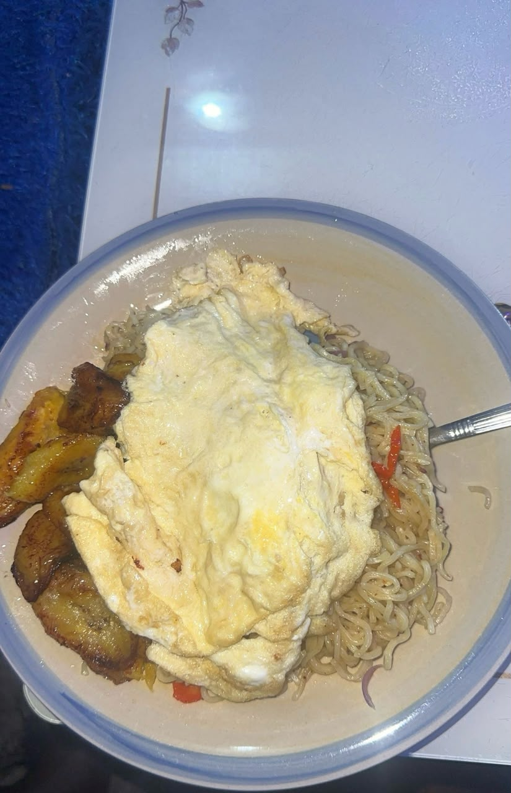

Noodles and Egg

Image credit: MK Onota
Description
Noodles and Egg with Fried Plantain is a quick, comforting meal that combines savory, seasoned noodles, a perfectly fried egg, and sweet, golden slices of friend plantain.
Ingredients
- 2 packs of instant noodles (with seasoning packets)
- 1 large egg
- 1 ripe plantain, sliced into rounds or diagonal
- 2 tablespoons of vegetable oil (for frying plantain and egg)
- Half a medium onion, sliced
- Fresh pepper and chopped vegetables (optional)
Cooking Steps
- Fry the plantain slices in hot vegetable oil over medium heat until both sides turn a beautiful golden brown, then drain them on pepper towels.
- Boil the noodle cakes in two cups of water for about 3 minutes until they begin to soften up and loosen.
- Stir in the noodle seasonings, siiced onions, and chopped fresh peppers, letting the liquid simmer down until the noodles are tender and the sauce thickens.
- Fry your egg in a seperate slightly greased pan - you can scramble it or make a perfect sunny-side-up or fried egg depending on what you prefer.
- Assemble your plate by placing the seasoned noodles at the center, then laying your fried egg and sweet plantain slices neatly on top.
`
Home